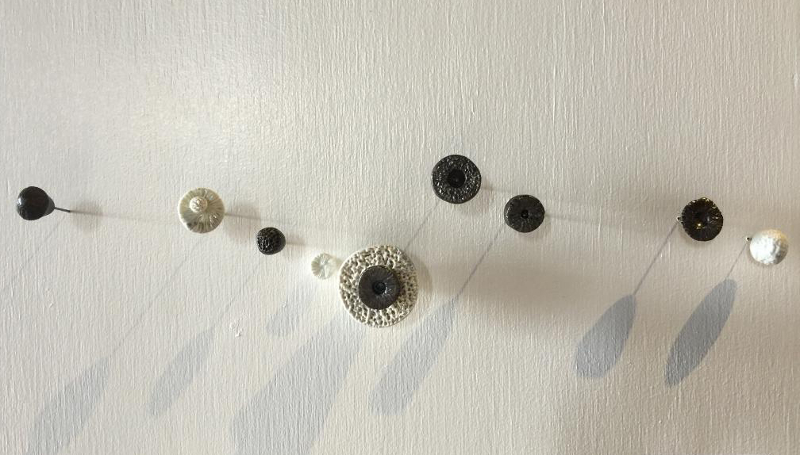

drinking vessels


pouring vessels


bowls


ecclectic art



on the wall


Artist Statement
My introduction to clay came in the form of ceramic tiles. Curiosity about glazes for my tile designs lead to pottery. Now, my one-of-a kind functional forms serve as a vehicle for personal expression. By pushing the clay to the verge of its structural limit, I am able to explore an asymmetrical movement while maintaining a sense of balance.
The relationship between the form and the choice of atmospheric firing is carefully choreographed. Always random and unpredictable, firing in wood, or soda, forces me to relinquish control of her work to the kiln. Although speculative at times, the transformation of any given piece can be magic!